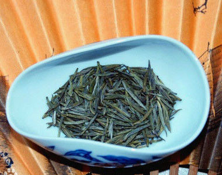

品茗指南
冲泡方法
1．百鹤沐浴（洗杯）：用开水洗净茶具；
2．观音入宫（落茶）：把铁观音放入茶具，放茶量约占茶具容量的五分；
3．悬壶高冲（冲茶）：把滚开的水提高冲入茶壶或盖瓯，使茶叶转动；
4．春风拂面（刮泡沫）：用壶盖或瓯盖轻轻刮去漂浮的白泡沫，使其清新洁净；
5．关公巡城（倒茶）：把泡一、二分钟后的茶水依次巡回注入并列的茶杯里；
6．韩信点兵（点茶）：茶水倒到少许时要一点一点均匀地滴到各茶杯里；
7．鉴赏汤色（看茶）：观尝杯中茶水的颜色；
8．品啜甘霖（喝茶）：乘热细啜，先嗅其香，后尝其味，边啜边嗅，浅斟细饮。饮量虽不多，但能齿颊留香，唯底回甘，心旷神怡。
在泡行茶过程中，身体保持良好的姿态，头要正、肩要平，动作过程中眼神与动作要和谐自然，在泡茶过程中要沉肩、垂肘、提腕，要用手腕的起伏带动手的动作，切忌肘部高高抬起。[8]
喝茶误区
喝茶后嚼茶渣助养生
一些人喝茶后会把茶叶渣咀嚼吃下去，因为茶叶中含有较多的胡萝卜素、粗纤维和其他营养物质。但从安全性上考虑，不建议使用这种方法。因为茶渣中也可能含有微量的铅、镉等重金属元素，以及水不溶性农药。如果吃茶渣，就会把这些有害物质摄入体内。
茶越新鲜越好
时新茶是指鲜叶炒制不足半个月的新茶。相对来说，这种茶喝起来确实味道更好。不过，从中医理论讲，刚加工的茶叶存有火气，这种火气需存贮一段时间才会消失。因此，饮用过多时新茶可使人上火。另外，新茶中的茶多酚、咖啡碱含量较高，容易对胃产生刺激作用，如果经常饮用新茶，有可能出现胃肠不适。胃不好的人，应少喝加工后存放不足半个月的绿茶。另外要提醒的是，并非所有种类的茶都是新的比陈的好，比如普洱茶等黑茶就需要适当陈化，品质更好。
睡前喝茶影响睡眠
茶叶中含有的咖啡碱有兴奋中枢神经的作用，因此，一直就有睡前喝茶会影响睡眠的说法。同时，咖啡碱也是利尿剂，加上喝茶摄入大量水分，势必增加夜间上厕所的次数，从而影响睡眠。但据消费者反映，喝普洱茶对睡眠的影响并不大。不过，这并不是因为普洱中所含的咖啡碱更少，而是因为其他还不明确的原因。